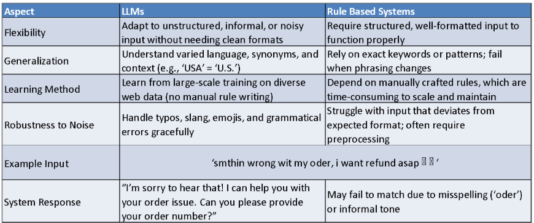
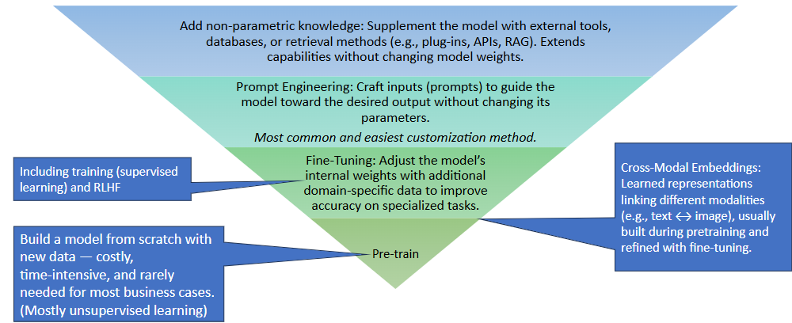
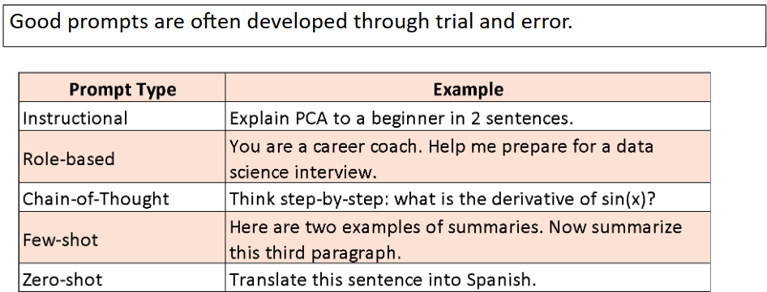
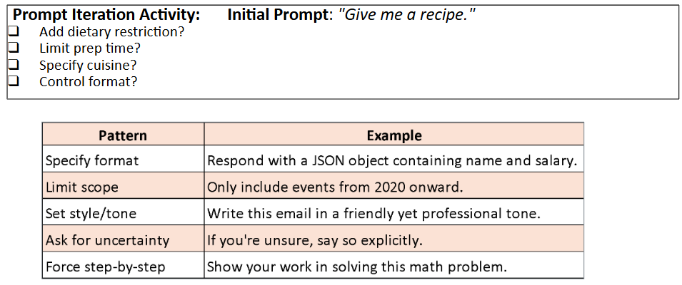
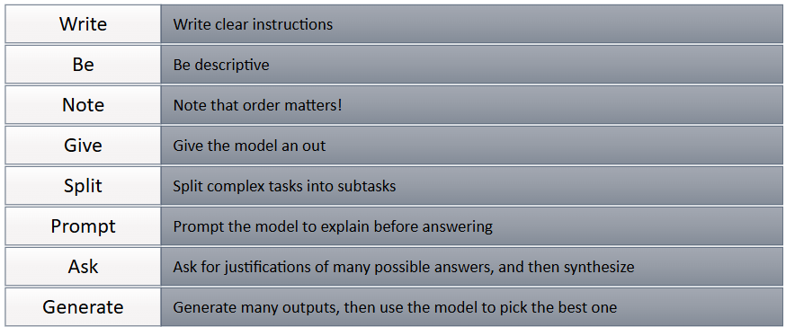
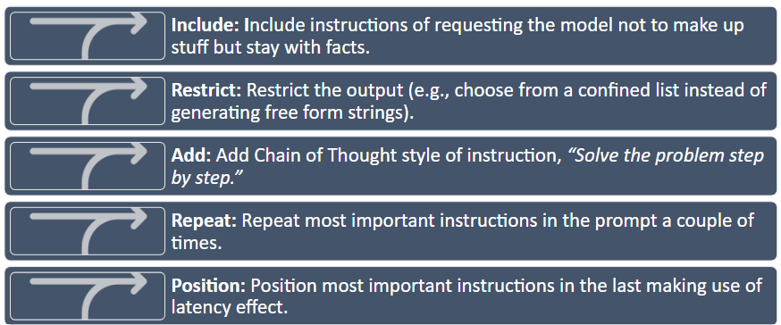
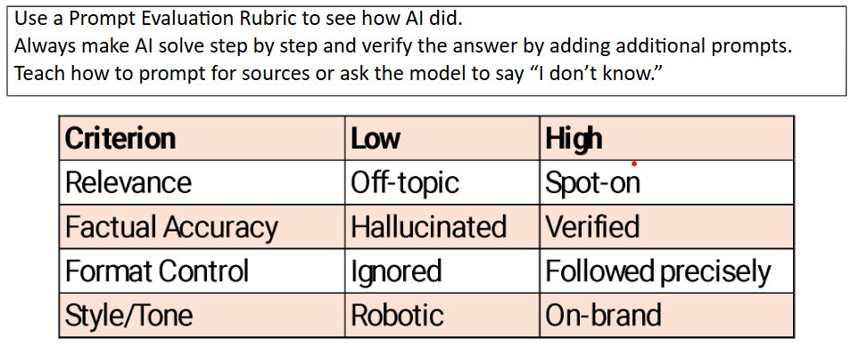

Understanding Generative AI
- This section introduces multimodal generative AI—systems that create and reason across text, images, audio, and video—and situates them within the broader evolution from language models (LMs) to large language models (LLMs) and multimodal LLMs (MLLMs). It explains how advances in transformer architectures, GPUs, and training methods (pretraining, fine-tuning, RLHF, and cross-modal embeddings) enable cross-modal understanding and generation, while prompting techniques turn these capabilities into reliable workflows. The section also surveys high-impact applications (automation, personalization, retrieval, and decision support), highlights risks (hallucination, bias, transparency), and outlines practical guardrails—evaluation rubrics, prompt engineering, and governance—for responsible deployment in real settings.
Reference: Together, Chapter 1 and 3 of Multimodal Generative AI present an overview of the foundations, architectures, and ethical considerations of multimodal generative systems, and examine how emerging multimodal large language models extend these capabilities with advanced cross-modal reasoning and generation—while grappling with challenges in complexity, data integration, and responsible deployment.
Generative AI
Generative AI refers to a type of AI that creates new content (text, audio, images) based on patterns learned from training data. It contrasts with predictive AI, which forecasts outcomes from historical data.
Some Examples:
ChatGPT – conversational text generation
Codex / GitHub Copilot – code generation and completion
DALL·E – image generation from text prompts
Perplexity AI – conversational search + generative synthesis
What is Generative AI?
Generative AI represents a Paradigm Shift
LM vs LLM
From Generative AI to LLMs
- Generative AI is the broad field of AI that can create new content (text, images, audio, video, code).
A Language Model (LM) is a core branch of GenAI focused on predicting and generating text based on patterns in language data.
LM are designed to predict the likelihood of words or phrases in a sentence.
Its main tasks include generating text, completing sentences, and suggesting new ideas based on context.
Example, “The stock market is…”
A Large Language Model (LLM) is a scaled-up LMs trained on massive datasets with billions of parameters, enabling advanced capabilities in reasoning, summarization, translation, and dialogue.
You can refer to an LLM as an advanced type of language model that uses deep learning, especially transformer architectures, to understand complex patterns in large text datasets.
LLMs, like GPT-3 and GPT-4, can generate human-like text and handle a wide variety of language tasks.
MLLM
A Multimodal Large Language Model (MLLM) refers to a special kind of LLM that can work with more than just text—it can also process and produce images, audio, and video. MLLMs combine different types of data and are capable of tasks like describing images, understanding memes, or generating website code from a visual prompt.
These emergent capabilities of MLLMs are rarely seen in conventional models and are viewed as steps toward Artificial General Intelligence (AGI).
Researchers across academia and industry are rapidly developing MLLMs that aim to match or surpass the capabilities of models like GPT-4V.
Why It Matters Now
There has recently been an explosion of LLMs and MLLM (e.g., GPT-4, Gemini, Claude)
There is a convergence of content generation and decision-making in business, healthcare, security, and creative work
AI brings transformational potential but introduces new risks
Automates workflows
Enhances productivity
Introduces bias, explainability, control
AI Evolution
Early Beginnings: Origins trace back to Pascal’s mechanical calculator (1642) and Ada Lovelace’s work on analytical engines (1837).
These inventions paved the way for automated computation and logic-based operations.
Modern AI Milestones: Progressed through neural networks, statistical machine learning, and deep learning.
Advances in hardware (e.g., GPUs) enabled training of large, complex models.
Generative AI Breakthroughs: Tools like GPT-4, DALL·E 2, and Copilot have redefined content creation and automation.
Applications span IT helpdesks, creative arts, medical advice, and recipe suggestions.
Economic Impact: Generative AI is projected to increase global GDP by 7% and could replace up to 300 million knowledge worker jobs.
Inspiration for Game Theory in Gen AI
Game Theory inspires Generative AI by modeling competition, cooperation, and strategic decision-making—core elements in adversarial training, multi-agent learning, and safe, interactive AI design like in Generative Adversarial Networks (GANs).
In GANs, two players—the generator and the discriminator—compete:
The generator tries to create realistic data.
The discriminator tries to distinguish real data from generated (fake) data.
This dynamic mirrors a non-cooperative game, where both improve over time through feedback.
The equilibrium of this game is when the Generator fools the Discriminator perfectly.
Game Theory in Gen AI
Data-Driven Workflow:
The process starts with diverse datasets (text, image, sound, etc.).
Training involves iterative learning of patterns from this data.
Fine-tuning further adapts models to specific tasks or domains.
- Fine-Tuning refers to the process of taking a pretrained foundational model and adapting it to a specific task or domain using additional labeled data. Essential for industry-specific applications of Generative AI.
Real-World Application Path
After training and fine-tuning, the model is used for inference—i.e., generating outputs from new inputs.
- Inference refers to the stage where a trained AI model is used to generate outputs (e.g., answering a question, completing a sentence) based on new input.
These outputs can power apps, APIs, and digital platforms.
Early AI: Chatbots Beginnings
1960s Origins: The earliest chatbots were rule-based systems using predefined keyword responses from expert knowledge bases (e.g., ELIZA).
- Not scalable or flexible—responses were rigid and failed in open-ended or dynamic conversations.
Rise of Statistical AI (1990s):
Introduced machine learning for pattern recognition from labeled text.
Enabled more adaptive and context-aware text classification.
Neural Networks & NLP Breakthroughs (2010s):
Deep learning and Recurrent Neural Networks (RNNs) enhanced language understanding.
Improved contextual awareness in sentence-level processing.
Early AI: Chatbots Beginnings: Transformers & LLMs:
The introduction of transformer models (e.g., GPT) revolutionized chatbot capabilities (≈2017).
- Transformer Architecture is a neural network design that allows models to process sequences (like text) with attention mechanisms, enabling context-aware and parallelized language generation.
Transformers are based on attention mechanisms that allow models to give different weights to inputs they receive, giving “more attention” to the most relevant information centered in the text sequence, regardless of the order in which it is placed.
Tokenization is the process of breaking text into tokens (subwords or characters), which are then used as inputs for LLMs to understand and generate language.
Attention Mechanisms allow models to focus on the most relevant parts of an input when generating outputs—critical for LLMs and multimodal systems.
Powered tools like ChatGPT and Bing Chat, capable of multi-turn conversations and creative output (2020).
Importance of GPU Innovation
- A GPU (Graphics Processing Unit) is a specialized processor designed to accelerate the rendering of images, animations, and video for display on a computer screen. Unlike a CPU (Central Processing Unit), which handles a wide variety of tasks, a GPU is optimized for performing many mathematical operations in parallel—especially those involving vectors and matrices.
Enabling Large-Scale Models:
GPU (Graphics Processing Unit) advancements have been critical in enabling the training and deployment of large language models (LLMs) like GPT-4.
Faster computation and greater efficiency have made AI more accessible and cost-effective.
Model Accessibility:
- Even smaller models can now be deployed on mobile devices, thanks to efficient GPU-based architectures (e.g., Google’s Palm Prompt2).
Democratization of AI:
Cheaper, more powerful chips allow a broader range of organizations (not just big tech) to build and fine-tune AI models.
Encourages open-source participation and innovation at scale.
Open-Source Generative AI Index (GenOS)
The Generative Open-Source Index (GenOS) is a comprehensive tracker that ranks and evaluates open-source generative AI projects across various modalities and applications.
GenOS helps developers, researchers, and organizations discover, compare, and leverage top-performing open-source GenAI tools.
This encourages transparency, collaboration, and accessibility in the generative AI ecosystem.
Uses Ranking Criteria: The index evaluates projects based on multiple factors including:
GitHub popularity (stars, forks, issues)
Recency of updates
Community contributions and forks
Technical features and use cases
Connecting GPU’s to GenOS
GPUs alone don’t create value — Instead, we need systems that organize, orchestrate, and scale AI capabilities across applications.
- A Generative AI Operating System (GenOS) builds on GPU-enabled model power. It provides the layer that manages foundation models, prompt engineering, data pipelines, safety mechanisms, and deployment — much like how traditional operating systems manage applications and hardware.
If GPUs are the engines, then GenOS is the driver’s dashboard and control system — turning raw compute into usable, business-ready intelligence.
Training Methodologies for LLMs
Data Collection:
- Training begins with collecting massive, diverse, and high-quality datasets from sources like web text, books, code, and forums to ensure the model learns varied language patterns.
Pretraining:
The model undergoes unsupervised learning using objectives like next-word prediction (causal language modeling) or masked word prediction (as in BERT), enabling it to learn general language understanding.
Masked word prediction refers to a training technique where certain words in a sentence are intentionally hidden (or “masked”) and the model is trained to predict the missing words based on the surrounding context.
Input to the model: “The cat sat on the [MASK].”
The model learns to predict: “mat”
Training Methodologies for LLMs Cont. Fine-Tuning (Supervised Training)
After a large model is pretrained on broad, general data (often self-supervised), fine-tuning specializes it by training on smaller, labeled datasets.
Aligns the pretrained model with specific tasks (e.g., summarization, question answering, translation, sentiment analysis).
How it works:
Uses supervised learning: input–output pairs are provided (e.g., an article with its summary).
Adjusts the weights of the pretrained model slightly (compared to full retraining).
Variants:
Full fine-tuning (all parameters updated).
Parameter-efficient fine-tuning (e.g., LoRA, adapters), where only a fraction of parameters are updated.
Benefit: Much cheaper and faster than pretraining from scratch, while tailoring the model to domain or task.
Training Methodologies for LLMs Cross-Modal Embeddings
What they are: Representations in a shared vector space that connect different modalities (like text, images, audio, video) by their semantic meaning.
Example:
An image of a dog and the word “dog” map close to each other in the embedding space.
Enables searching for images with text queries (“golden retriever playing frisbee”) or generating captions from images.
Why it matters:
Breaks down the barrier between modalities.
Powers applications like multimodal retrieval, captioning, cross-lingual video search, and multimodal reasoning.
Training Methodologies for LLMs Cont.
Reinforcement Learning with Human Feedback (RLHF): A feedback loop where human preferences guide the model’s responses—used to make assistant models more aligned, coherent, and safe (e.g., GPT-3.5-turbo, ChatGPT).
RLHF is a specialized fine-tuning methodology that comes after pretraining (and often after supervised fine-tuning). Human feedback is used to adjust the model’s outputs, rewarding “good” responses (helpful, safe, aligned) and discouraging “bad” ones (toxic, incoherent, misleading).
The goal is to make models more aligned with human values and conversational needs, not just good at predicting the next token.
In what ways do LLMs handle unstructured, messy web data differently than traditional rule-based systems?

Prompting Using Gen AI
For extra information review O’Reilly Video on Prompt Engineering: https://learning.oreilly.com/videos/prompt-engineering/9781835881521/9781835881521-video1_1/
RLHF vs Prompt Engineering
- Prompt engineering builds on RLHF: Once the model has been aligned with RLHF, prompt engineering is how users leverage that alignment in real-world queries.
RLHF is part of model training and fine tuning: It shapes the foundation of how the model responds to prompts by making it more “instruction-following” and aligned.
- RLHF = tuning the car’s steering system so it follows directions well.
Prompt engineering builds on RLHF: Once the model has been aligned with RLHF, prompt engineering is how users leverage that alignment in real-world queries.
- Prompt engineering = how you, the driver, actually steer it with the wheel.
Prompt Engineering for Model Customization

Prompt Engineering
A well-crafted prompt can function like a “program” for the LLM, guiding it to generate structured outputs, perform reasoning, or simulate specific roles.
Prompt Engineering is the art and science of crafting inputs to get desired outputs from AI systems
Core idea: “Garbage in, garbage out”
Crucial for improving reliability, tone, and relevance of LLM responses
Prompting Paradigm
Prompting Paradigm refers to the method of adapting LLMs through natural language instructions rather than retraining.
Base models, such as GPT-3 or LLaMA-2, are pretrained on massive amounts of text data. This pretraining allows them to perform a wide variety of general tasks just from prompting.
Assistant models, like ChatGPT or Claude, take this a step further. They are fine-tuned using Reinforcement Learning with Human Feedback. That means humans guide the model by rewarding helpful responses and discouraging unhelpful ones, shaping it to respond in a more conversational and task-specific way.
Why it matters
Prompts shape how LLMs behave
Better prompts = better outcomes
Useful across industries
Understanding the Prompting Paradigm
Prompting is foundational to in-context learning, where the model draws on prompt examples to infer new tasks dynamically.
Chain of Thought refers to a prompting strategy where the model is encouraged to generate step-by-step reasoning before arriving at a conclusion, improving accuracy in logic-based tasks.
Few-Shot In-Context Learning refers to the ability of LLMs to learn patterns or tasks at inference time based solely on the context provided in a prompt, without requiring additional model training.
Prompting is increasingly used as an interface layer between users and LLMs—minimizing the need for retraining while enabling flexible task execution.
Prompt Types

Prompt Engineering Iterations and Patterns

Principles of Prompting

Split Complex Tasks into Subtasks
Meta Prompt
You are an AI assistant that explains prompting paradigms, specifically: instructional, role-based, chain-of-thought, few-shot, and zero-shot.
Follow these steps:Identify which prompting paradigm is relevant to the user’s request.
Explain the purpose of that paradigm and how it improves responses.
Provide a short illustrative example showing the paradigm in action.
If asked, find an article related to prompting and summarize it concisely in 3–4 sentences.
User
Can you find an article about the chain-of-thought prompting paradigm and summarize it in 3 sentences with a reference link?Answer
I found the article “Chain-of-Thought Prompting Elicits Reasoning in Large Language Models” by Google Research. The paper introduces chain-of-thought prompting as a method where models generate intermediate reasoning steps before producing a final answer, which greatly improves performance on arithmetic, commonsense, and symbolic reasoning tasks. It demonstrates that this method is especially powerful when combined with large models, as reasoning accuracy scales with model size.📖 Reference: Wei, J. et al. (2022). Chain-of-Thought Prompting Elicits Reasoning in Large Language Models. https://arxiv.org/abs/2201.11903
Prompt the Model to Give an Explanation
Meta prompt
- You are a Dash expert that helps users build interactive dashboards in Python. You extract the necessary context from the user’s request and provide both natural-language explanations and code examples. ALWAYS explain what each part of the code is doing so the user understands how the app works. Take note that app.run_server is deprecated.
User
- Can you make a dashboard that shows the top 3 countries by sales revenue in a bar chart?
Answer
- Here’s a simple Dash app that displays the top 3 countries by sales revenue in a bar chart. To achieve this, I first created a small pandas DataFrame with sample data for countries and sales revenue. Then I sorted it and selected the top 3 entries. Finally, I built a bar chart using Plotly Express and served it in a Dash layout.
**Provides code to include in python
Ask for Justification
Meta prompt
You are an AI assistant that decides whether a passage demonstrates statistical reasoning by its authors. Classify the passage as one of: Used statistical reasoning, No statistical reasoning, or Unclear. ALWAYS provide a justification that identifies the specific features in the passage that support your decision. Cite the exact part(s) of the passage where the sample size and treatment effect are stated.
User
Read the following passage and decide whether the authors used statistical reasoning. Justify your answer with evidence from the passage, and include citations to the text where the sample size and treatment effect are reported: “In a randomized controlled trial with 240 participants, the treatment group’s recovery rate was 12% higher than control (95% CI: 4%–20%, p = 0.01).”
Answer
Decision: Used statistical reasoning.
Justification: The passage demonstrates statistical reasoning by referencing an experimental design (“randomized controlled trial”), providing a sample size (“240 participants”), reporting a quantified treatment effect (“12% higher than control”), and presenting inferential measures (“95% CI: 4%–20%, p = 0.01”). Together, these show systematic use of statistics to draw conclusions.
Continuing with an Unclear Example
User
Read the following passage and decide whether the authors used statistical reasoning. Justify your answer with evidence from the passage, and include citations (or explain their absence) for the sample size and treatment effect: “The treatment group recovered more often than the control group.”Answer
Decision: Unclear.
Justification: The passage makes a comparative statement (“recovered more often”), but it does not include statistical details such as the sample size (not provided) or the magnitude of the treatment effect (not quantified). Without these, it is impossible to confirm whether statistical reasoning was applied; the authors only make a descriptive claim rather than presenting inferential evidence.
LLM Hallucinations
LLM Hallucinations refer to situations where the model generates plausible but false or fabricated content, often due to gaps in training data or the probabilistic nature of text prediction.
Prompt from lawyer: “Can you provide legal cases where the U.S. Supreme Court ruled that AI-generated evidence is inadmissible in court?“
ChatGPT: “Yes. In the case of Smith v. United States, 2022, the Supreme Court ruled that evidence generated by an AI system without human oversight was inadmissible, citing concerns over transparency and accountability.“
- There is no case called Smith v. United States (2022) that involves AI-generated evidence. The model fabricated a plausible-sounding court case based on the prompt. It may even invent quotes or legal reasoning that sound real but do not exist in any official ruling.
Reduce Hallucination with Prompt Engineering

Spotting Hallucinations
Hallucinations are confident but factually incorrect responses generated by LLMs. To spot them look for These Red Flags:
Too specific without source: “The GDP of Argentina in Q3 2023 was exactly $347.2 billion” (without citation).
Invented sources or references: Fake articles, court cases, or journal titles.
Contradictions or inconsistencies within a response.
Overly confident language in uncertain or speculative topics: “This is definitely true.”
Missing common sense: “The Eiffel Tower is 1,200 miles tall.”
Why Prompting Doesn’t Guarantee Generative AI Is Good at Math
Even if you give a well-crafted prompt, that doesn’t mean generative AI will solve math problems correctly.
Generative AI can imitate math, but it doesn’t understand it.
Fluency does not necessarily equal Accuracy
LLMs Predict Language, Not Compute Logic
LLMs Lack Internal Verification
LLMs don’t check their answers unless explicitly prompted to do so.
Unlike specific math engines, they don’t “know” math rules—they approximate them from training examples.
Errors Increase with Complexity
Give AI a Prompt Evaluation Rubric

Paths Forward in Generative AI
Fine-Tuning & Domain Adaptation:
- Tailoring general models to specific industry or task domains by training it on labeled datasets to improve relevance and reliability.
Hybrid Approaches:
- Combining symbolic AI (rules-based) with generative models may boost explainability and control.
Regulation & Ethical Frameworks:
- Encouraging responsible use through AI governance, transparency, and auditable AI practices.
Open Collaboration:
- Continued progress through open-source communities, academic-industry partnerships, and shared benchmarks.